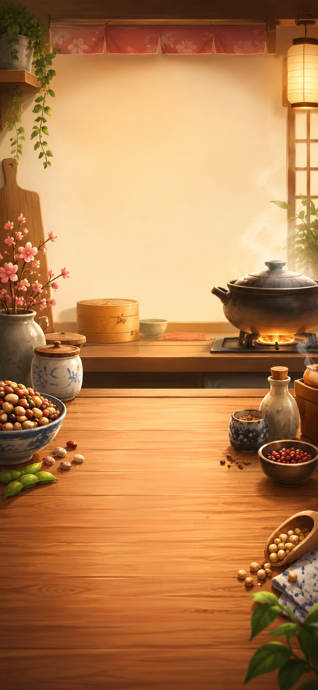
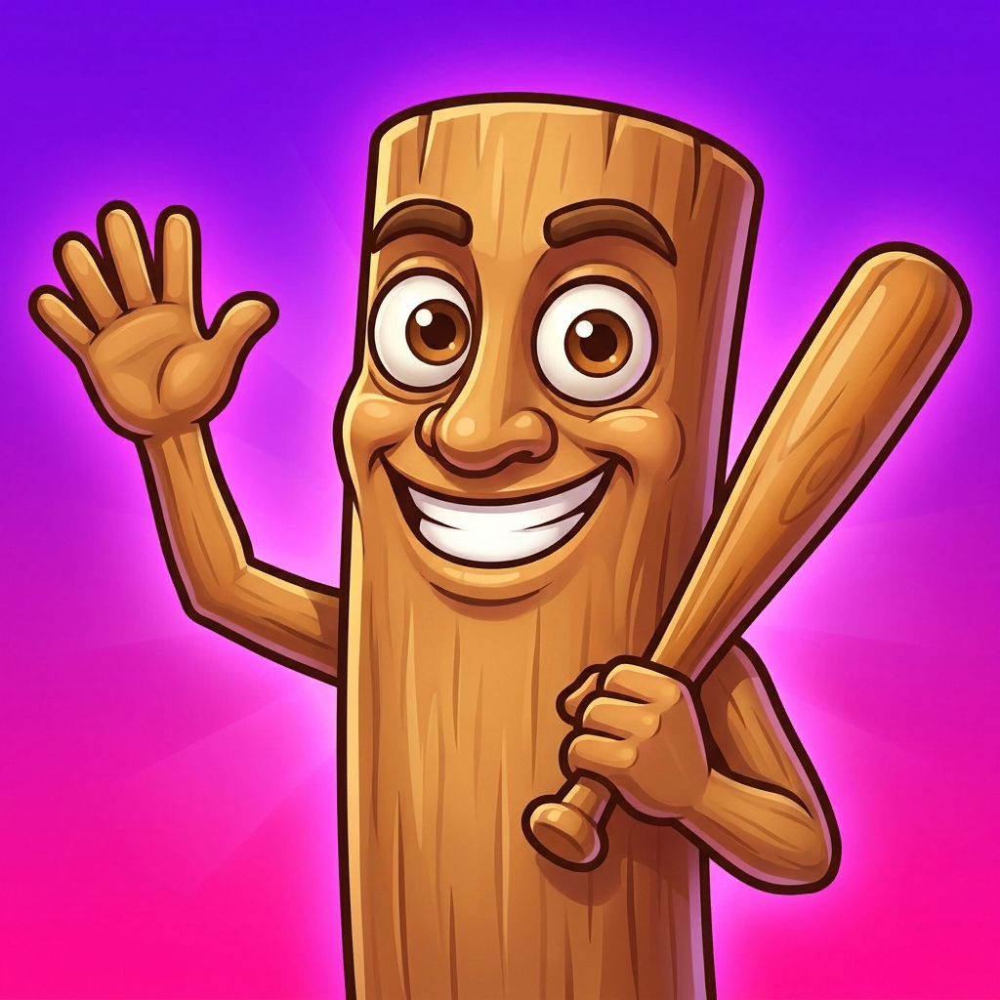

WasabiBeans
個人開発のアプリと制作ログ。
Official Sites
WasabiBeans 開発者ホームページブランド全体、制作方針、アプリ一覧

Bean Rush 公式サイト豆を滑らせる和風スライドパズル
MemeClash 公式サイトiPhone向けカジュアル3DバトルゲームSocial
WasabiBeans YouTubeチャンネルアプリ紹介、開発ログ、アップデート情報 WasabiBeans TikTokアカウント短いアプリデモと制作ログ WasabiBeans Instagramアカウントリール、画像、開発の記録 WasabiBeans Xアカウント日々の進捗とお知らせDeveloper
WasabiBeans GitHubプロフィール開発用アカウント。SNSの主要リンクにはしない